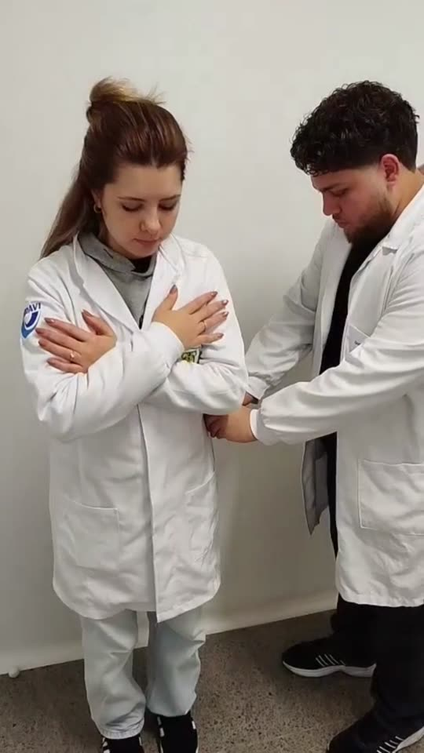
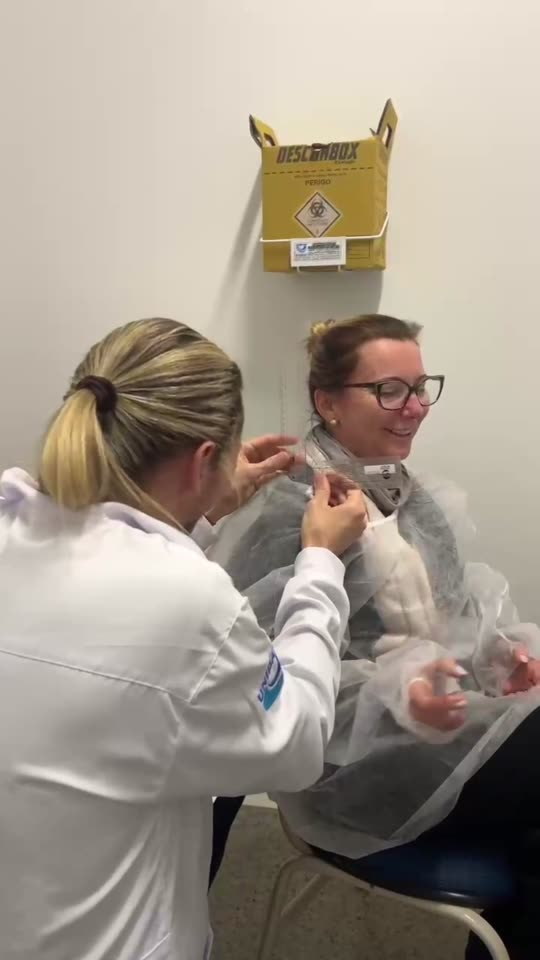
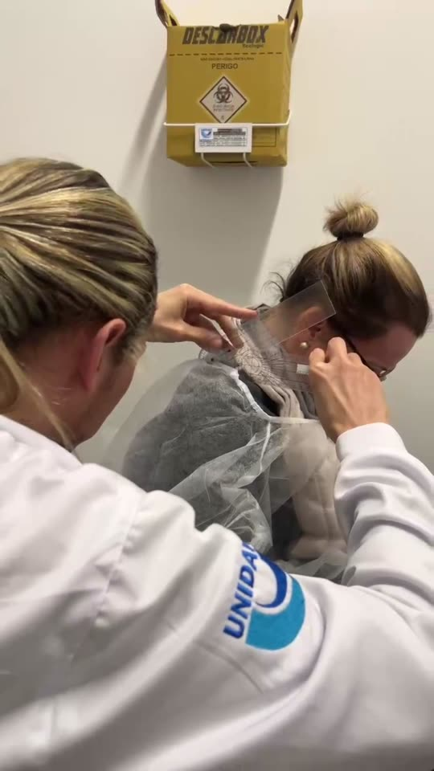
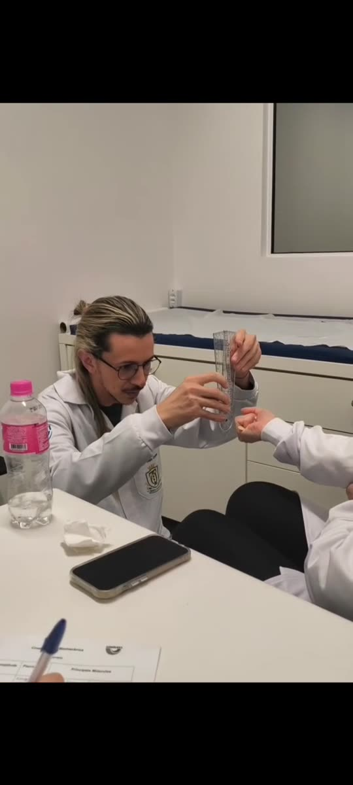
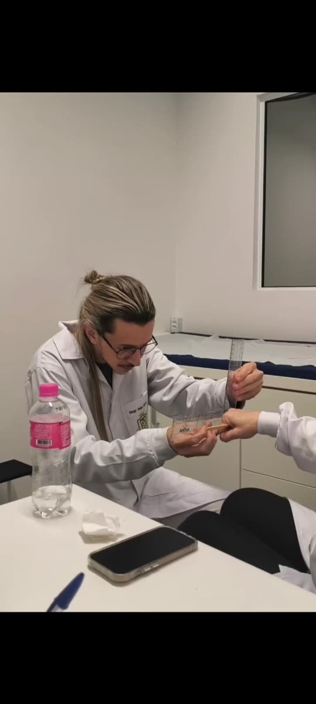
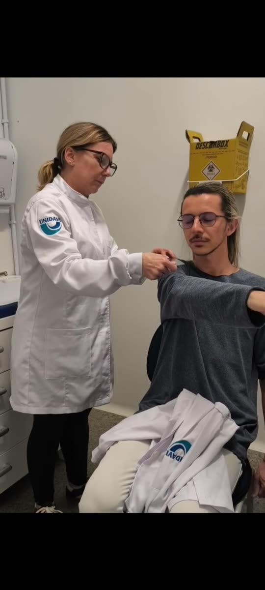
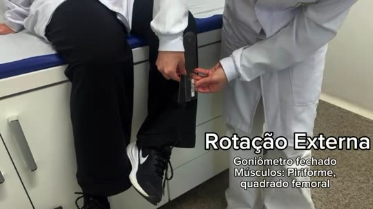

Goniometria de punho e coluna
Primeira atividade prática da disciplina. Em grupo, avaliamos com o goniômetro a amplitude de movimento (ADM) do punho e da coluna cervical e lombar, seguindo o manual de goniometria, e filmamos cada avaliação.
Contexto: o que estudamos antes de medir
Goniometria é a medição dos ângulos das articulações. Ela permite avaliar a amplitude de movimento, acompanhar a evolução do paciente e orientar condutas terapêuticas, com medidas objetivas e reproduzíveis.
- Eixo do goniômetro: fica sobre o centro articular, o ponto de rotação da articulação avaliada.
- Braço fixo: alinhado ao segmento proximal, em relação à articulação.
- Braço móvel: acompanha o segmento distal durante o movimento e registra a amplitude.
- Posição de referência: posição anatômica, com corpo ereto, olhar à frente, palmas para frente e pés paralelos.
| Plano | Divide o corpo em | Eixo |
|---|---|---|
| Sagital | direito e esquerdo | látero-lateral |
| Frontal | anterior e posterior | ântero-posterior |
| Transversal | superior e inferior | longitudinal |
O que fizemos
O grupo (Diego, Gustavo, Jennyfer, Raiane e Sirlene) se revezou entre avaliador e avaliado. Para cada movimento, posicionamos o paciente, alinhamos os braços do goniômetro nos pontos de referência do manual, medimos a amplitude e evitamos os movimentos compensatórios descritos nas precauções. Depois, cada um preencheu o roteiro individualmente e o entregou no Google Classroom.
Resultados por região
A coluna "Roteiro" traz os valores preenchidos no roteiro da aula. A coluna "Manual" traz a amplitude de referência (Kapandji, 2005, para o punho; Marques, 2003, para a coluna).
Punho
| Movimento | Roteiro | Manual | Plano / eixo | Principais músculos |
|---|---|---|---|---|
| Flexão | 40° | 0–85° | Sagital / látero-lateral | Flexor radial do carpo, flexor ulnar do carpo |
| Extensão | 60° | 0–85° | Sagital / látero-lateral | Extensor radial longo e curto do carpo, extensor ulnar do carpo |
| Adução | 30° | 0–45° | Frontal / ântero-posterior | Flexor ulnar do carpo, extensor ulnar do carpo |
| Abdução | 15° | 0–15° | Frontal / ântero-posterior | Extensor radial longo do carpo, abdutor longo do polegar |
Como medimos:
- Flexão e extensão: paciente sentado, antebraço em pronação, cotovelo a cerca de 90°. Braço fixo na face medial da ulna, braço móvel no 5º metacarpo, eixo na face medial do punho. Dedos relaxados e sem desvio radial ou ulnar.
- Abdução e adução: antebraço em posição neutra entre pronação e supinação. Braço fixo na face posterior do antebraço, apontando para o epicôndilo lateral. Braço móvel no dorso do 3º metacarpo, eixo na articulação radiocarpal. Sem flexão ou extensão do punho.
Coluna cervical
| Movimento | Roteiro | Manual | Plano / eixo | Principais músculos |
|---|---|---|---|---|
| Flexão | 60° | 0–65° | Sagital / látero-lateral | Esternocleidomastoideo, escaleno |
| Extensão | 50° | 0–50° | Sagital / látero-lateral | Esplênio, trapézio |
| Flexão lateral | 36° | 0–40° | Frontal / ântero-posterior | Escaleno, esternocleidomastoideo |
| Rotação | 48° | 0–55° | Transversal / longitudinal | Esternocleidomastoideo, esplênio |
Como medimos:
- Flexão e extensão: paciente sentado, coluna cervical alinhada. Braço fixo na altura do acrômio, paralelo ao solo, no plano da 7ª vértebra cervical. Braço móvel dirigido ao lóbulo da orelha no fim do movimento. Sem flexão de tronco, rotação ou inclinação.
- Flexão lateral: braço móvel na linha média da coluna cervical, dirigido à protuberância occipital externa. Sem elevar o ombro.
- Rotação: braço fixo no centro da cabeça, sobre a sutura sagital, e braço móvel acompanhando a sutura no fim do movimento. Sem rotação de tronco.
Coluna lombar
| Movimento | Roteiro | Manual | Plano / eixo | Principais músculos |
|---|---|---|---|---|
| Flexão | 70° | 0–95° | Sagital / látero-lateral | Reto abdominal, oblíquos externo e interno |
| Extensão | 25° | 0–35° | Sagital / látero-lateral | Eretor da espinha, multífidos |
| Flexão lateral | 30° | 0–40° | Frontal / ântero-posterior | Quadrado lombar, eretor da espinha |
| Rotação | 35° | 0–35° | Transversal / longitudinal | Oblíquos externo e interno |
Como medimos:
- Flexão e extensão: paciente em pé, pés juntos e alinhados, medida pela lateral. Eixo na espinha ilíaca ântero-superior e braço móvel ao longo da linha axilar média. Sem flexionar ou hiperestender os joelhos.
- Flexão lateral: braço fixo na linha das espinhas ilíacas póstero-superiores e braço móvel dirigido ao processo espinhoso de C7. Sem inclinar a pelve.
- Rotação: paciente sentado o mais ereto possível, girando para o lado avaliado. Sem rotação cervical ou pélvica.
Filmagens e fotos
Registro da atividade em sala. Os quadros abaixo foram tirados do vídeo.




Reflexão
Espaço para o que você aprendeu: como a posição do paciente e o alinhamento do goniômetro mudam a medida, quais compensações foram mais difíceis de evitar e como isso se relaciona com a prática da Terapia Ocupacional.
Goniometria de ombro e cotovelo
Segunda atividade prática da disciplina. Em grupo, avaliamos com o goniômetro a amplitude de movimento (ADM) do ombro e do cotovelo, seguindo o manual de goniometria, e filmamos cada avaliação.
Contexto: o que revisamos antes de medir
O ombro é a articulação mais móvel do corpo, o que exige atenção redobrada ao posicionamento do goniômetro para evitar movimentos compensatórios do tronco e da escápula. O cotovelo, por sua vez, soma dois tipos de movimento: flexão/extensão (articulação umeroulnar) e pronação/supinação (articulação radioulnar).
- Ombro: flexão, extensão, adução, abdução, rotação interna e rotação externa.
- Cotovelo: flexão, extensão, pronação e supinação do antebraço.
- Cuidado principal: evitar compensações do tronco, da escápula e do punho durante a medição, já que o ombro tende a "roubar" movimento das articulações vizinhas.
O que fizemos
O grupo (Diego, Gustavo, Jennyfer, Raiane e Sirlene) se revezou entre avaliador e avaliado, como no Dia 1. Posicionamos o paciente conforme o manual para cada movimento, alinhamos os braços do goniômetro nos pontos de referência e medimos a amplitude do ombro e do cotovelo. Depois, cada um preencheu o roteiro individualmente e o entregou no Google Classroom.
Resultados por região
A coluna "Roteiro" traz os valores preenchidos no roteiro da aula. A coluna "Manual" traz a amplitude de referência (Kapandji, 2011, para o ombro e cotovelo; Marques, 2003, para pronação e supinação).
Ombro
| Movimento | Roteiro | Manual | Plano / eixo | Principais músculos |
|---|---|---|---|---|
| Flexão | 160° | 0–180° | Sagital / látero-lateral | Deltoide, peitoral maior |
| Extensão | 120° | 0–45° | Sagital / látero-lateral | Latíssimo do dorso, deltoide, redondo maior |
| Adução | 20° | 0–40° | Frontal / ântero-posterior | Latíssimo do dorso, peitoral maior, redondo maior |
| Abdução | 150° | 0–180° | Frontal / ântero-posterior | Supraespinhal, deltoide, trapézio |
| Rotação interna | 72° | 0–90° | Longitudinal / transversal | Subescapular, peitoral maior |
| Rotação externa | 90° | 0–90° | Longitudinal / transversal | Infraespinhal, redondo menor |
Observação: o valor de extensão do roteiro (120°) foge do padrão do manual (0–45°) — provavelmente uma troca com a flexão ao preencher; vale conferir com o grupo antes de entregar.
Como medimos:
- Flexão e extensão: paciente sentado, braços ao longo do corpo. Braço fixo na linha axilar média do tronco, apontando para o trocânter maior do fêmur. Braço móvel na face lateral do úmero, voltado ao epicôndilo lateral. Eixo próximo ao acrômio. Sem hiperextensão lombar, abdução do ombro ou elevação da escápula.
- Abdução: paciente de costas para o avaliador, palma da mão voltada para frente. Braço fixo na linha axilar posterior, braço móvel na face posterior do braço, eixo próximo ao acrômio. Sem inclinar a coluna ou elevar a escápula.
- Rotação interna e externa: paciente deitado, ombro abduzido a 90°, cotovelo fletido a 90°, antebraço em supinação. Braço fixo paralelo ao solo, braço móvel na região posterior do antebraço em direção ao 3º dedo, eixo paralelo ao olécrano. Ombro mantido a 90° de abdução durante toda a medição.
Cotovelo
| Movimento | Roteiro | Manual | Plano / eixo | Principais músculos |
|---|---|---|---|---|
| Flexão | 121° | 0–145° | Sagital / látero-lateral | Bíceps braquial, braquial, braquiorradial |
| Extensão | 0° | 0–45° | Sagital / látero-lateral | Tríceps braquial, ancôneo |
| Pronação | 90° | 0–90° | Transversal / longitudinal | Pronador redondo, pronador quadrado |
| Supinação | 90° | 0–90° | Transversal / longitudinal | Supinador, bíceps braquial |
Como medimos:
- Flexão e extensão: paciente sentado, em pé ou deitado, membro junto ao tronco. Braço fixo ao longo do úmero em direção ao acrômio, braço móvel na face lateral do rádio apontando para o processo estiloide. Eixo no epicôndilo lateral do úmero. Sem flexionar o ombro.
- Pronação e supinação: cotovelo fletido a 90°, braço junto ao corpo, antebraço em posição neutra, segurando um lápis. Braço fixo na superfície dorsal dos metacarpais, paralelo ao úmero (permanece fixo). Braço móvel acompanha o lápis ou o polegar. Eixo na articulação metacarpofalângica do dedo médio. Cotovelo mantido junto ao tronco durante toda a medição.
Questões respondidas
1. Redução de ADM do ombro (flexão e abdução) e impacto nas AVDs. A redução pode estar relacionada a dor, rigidez articular, encurtamento ou fraqueza muscular, edema, alterações articulares ou musculares e medo de movimentar. Essa limitação compromete a independência funcional do paciente e pode levar a compensações com outras partes do corpo durante atividades como pentear o cabelo, vestir-se ou alcançar objetos em uma prateleira.
2. Dor e redução de ADM após imobilização (rotação externa e abdução). Fatores como medo da dor, fraqueza muscular, redução da mobilidade e desgaste de cartilagem contribuem para a perda de flexibilidade. As intervenções incluem exercícios de amplitude de movimento, fortalecimento muscular e treino das AVDs (como simular pentear o cabelo, vestir-se, estender roupas), retomando a segurança e a independência de forma gradual.
Filmagens e fotos
Registro da atividade em sala. Os quadros abaixo foram tirados do vídeo.




Reflexão
Espaço para o que você aprendeu: como o ombro tende a compensar com o tronco e a escápula durante a medição, a diferença entre medir uma articulação com dois eixos de movimento (o cotovelo) e uma com múltiplos graus de liberdade (o ombro), e como isso se relaciona com a prática da Terapia Ocupacional.
Goniometria de membros inferiores
Terceira atividade prática da disciplina. Em grupo, avaliamos com o goniômetro a amplitude de movimento (ADM) do quadril, joelho e tornozelo, seguindo o manual de goniometria, e filmamos cada avaliação.
Contexto: o que revisamos antes de medir
Os membros inferiores somam três articulações com papéis distintos na marcha e no equilíbrio: o quadril, com grande amplitude em vários planos; o joelho, essencialmente uma dobradiça de flexão e extensão; e o tornozelo, que combina dois eixos (dorsiflexão/flexão plantar e inversão/eversão) para adaptar o pé ao solo.
- Quadril: flexão, extensão, abdução, adução, rotação interna e rotação externa.
- Joelho: flexão e extensão.
- Tornozelo: dorsiflexão, flexão plantar, inversão e eversão.
O que fizemos
O grupo (Diego, Gustavo, Jennyfer, Raiane e Sirlene) se revezou entre avaliador e avaliado, com o paciente deitado na maca. Posicionamos o goniômetro nos pontos de referência de cada articulação, medimos a amplitude e registramos os músculos envolvidos em cada movimento. Depois, cada um preencheu o roteiro individualmente e o entregou no Google Classroom.
Resultados por região
Quadril
| Movimento | Posição do goniômetro | Principais músculos |
|---|---|---|
| Flexão | 180° | Iliopsoas, reto femoral, tensor da fáscia lata |
| Extensão | 180° | Glúteo máximo, bíceps femoral |
| Abdução | 90° | Glúteo médio, glúteo mínimo |
| Adução | 90° | Adutor longo, adutor curto, grácil |
| Rotação externa | Fechado (0°) | Piriforme, quadrado femoral |
| Rotação interna | Fechado (0°) | Glúteo mínimo, glúteo médio |
Nota: esses valores são a leitura inicial do goniômetro mostrada no vídeo (a posição de partida da medição), não a amplitude final atingida pelo paciente. Se vocês registraram o grau final de cada movimento no roteiro, me manda que eu completo a tabela com os valores medidos ao lado da referência do manual (aprox. flexão 0–120°, extensão 0–20°, abdução 0–45°, adução 0–30°, rotações 0–35 a 45°, Kapandji 2011).
Joelho
| Movimento | Roteiro | Manual | Plano / eixo | Principais músculos |
|---|---|---|---|---|
| Flexão | 140° | 0–135° (até 140° em Kapandji) | Sagital / látero-lateral | Bíceps femoral, semitendíneo, semimembranoso |
| Extensão | 150° | 0° | Sagital / látero-lateral | Reto femoral, vasto lateral, vasto medial, vasto intermédio |
Observação: o valor de extensão do roteiro (150°) é maior que a referência do manual (0°, posição neutra) — confira com o grupo se não foi trocado com a flexão, ou se corresponde à leitura direta do goniômetro (180° fechado − amplitude medida).
Tornozelo
| Movimento | Roteiro | Manual | Plano / eixo | Principais músculos |
|---|---|---|---|---|
| Dorsiflexão | 30° | 0–20° | Sagital / látero-lateral | Extensor longo dos dedos, extensor longo do hálux |
| Flexão plantar | 35° | 0–50° | Sagital / látero-lateral | Gastrocnêmio, sóleo, plantar, tibial posterior |
| Eversão | 25° | 0–20° | Frontal / ântero-posterior | Fibular longo, fibular curto |
| Inversão | 45° | 0–35° | Frontal / ântero-posterior | Tibial posterior, tibial anterior |
Filmagens e fotos
Registro da atividade em sala. Os quadros abaixo foram tirados do vídeo, que já traz legendas com o músculo e a posição do goniômetro em cada movimento do quadril.



Reflexão
Espaço para o que você aprendeu: como a posição do paciente (deitado, joelho fletido) muda a medida do quadril, por que a extensão de joelho costuma ser 0° em pessoas sem hiperextensão, e como a mobilidade dessas três articulações se combina na marcha.
Exercícios na academia
Quarta atividade da disciplina, iniciando um novo conteúdo: cinemática e biomecânica aplicadas ao treinamento em academia. O professor Rafael apresentou os conceitos em slides antes da parte prática, que aconteceu na academia da Unidavi.
Contexto: cinemática e o movimento humano
Cinemática é o estudo do movimento dos corpos no espaço e no tempo, sem analisar as forças que o causam — descreve deslocamento, velocidade e aceleração. Ela se divide em cinemática linear (deslocamento de um ponto em linha reta ou curva, como andar) e cinemática angular (rotação de um segmento em torno de um eixo, como a flexão do cotovelo). Na Terapia Ocupacional, ela permite identificar disfunções de movimento, quantificar o progresso da reabilitação e otimizar exercícios.
- Formas de movimento: retilíneo, rotacional (angular) e curvilíneo (geral) — a combinação de translação e rotação é a mais comum no movimento humano real.
- Agonista: músculo principal responsável pelo movimento (ex.: bíceps na rosca direta).
- Antagonista: atua em oposição ao agonista, controlando e estabilizando o movimento (ex.: tríceps na rosca direta).
- Sinergista: auxilia o agonista, estabilizando articulações adjacentes e refinando a trajetória.
Tipos de contração e de exercício
- Isométrica: o músculo gera tensão sem alterar o comprimento (ex.: prancha).
- Isotônica concêntrica: o músculo se encurta durante o esforço (ex.: subida da rosca bíceps).
- Isotônica excêntrica: o músculo se alonga sob tensão, na desaceleração (ex.: descida controlada da rosca) — gera maior dano muscular e adaptação.
- Monoarticular: envolve uma articulação, permite isolamento muscular (ex.: cadeira extensora). Multiarticular: envolve duas ou mais articulações, maior gasto energético (ex.: leg press).
- Cadeia cinética aberta (CCA): o segmento distal move-se livremente no espaço (ex.: rosca direta). Cadeia cinética fechada (CCF): o segmento distal permanece fixo numa superfície, com maior estabilidade articular (ex.: agachamento, leg press).
Treinamento em academia e princípios
- Predominância aeróbica: exercícios de longa duração e intensidade baixa a moderada (esteira, bicicleta), usando o sistema oxidativo. Predominância anaeróbica: exercícios de alta intensidade e curta duração (musculação), usando os sistemas glicolítico e fosfagênico.
- Fibras musculares: tipo I (lentas, resistentes à fadiga), tipo IIa (intermediárias) e tipo IIx (rápidas, potentes, fadigam rápido).
- Objetivos de treino: força máxima (cargas altas, poucas repetições), hipertrofia (cargas moderadas, repetições intermediárias) e resistência muscular (cargas baixas, muitas repetições).
- Princípios do treinamento: individualidade biológica (cada pessoa responde de forma única), sobrecarga (o estímulo deve superar o nível habitual) e especificidade (o corpo se adapta ao tipo de exercício praticado).
- Fatores limitantes: fadiga muscular (acúmulo de metabólitos e falha na transmissão neuromuscular) e cãibras (depleção de eletrólitos e disparos neuromusculares descoordenados).
O que fizemos
Fomos à academia da Unidavi para a parte prática. Cada integrante do grupo filmou um exercício por grupo muscular, identificando os músculos agonista, antagonista e sinergista, e classificando o movimento como cadeia cinética aberta ou fechada. Depois, cada um preencheu o roteiro individualmente e o entregou no Google Classroom, com cargas baixas para evitar lesões.
Roteiro preenchido
| Grupo muscular | Exercício | Agonista | Antagonista | Sinergista | Cadeia cinética |
|---|---|---|---|---|---|
| Peitoral | Voador | Peitoral maior | Deltoide posterior | Deltoide anterior | Aberta |
| Costas | Puxada alta | Latíssimo do dorso | Deltoide anterior | Braquial | Aberta |
| Braços | Tríceps polia | Tríceps braquial | Bíceps braquial | Deltoide posterior | Aberta |
| Ombro | Desenvolvimento c/ halteres | Deltoide | Bíceps braquial | Tríceps braquial | Aberta |
| Quadril | Leg Press | Quadríceps femoral | Isquiotibiais | Glúteo máximo | Fechada |
Filmagens e fotos
Essa atividade ainda não tem vídeo ou foto anexados. Quando você mandar as filmagens da academia, eu incluo aqui do mesmo jeito que fiz nos outros dias.
Reflexão
Espaço para o que você aprendeu: como identificar o agonista de um exercício observando o movimento que ele produz, por que exercícios em cadeia fechada costumam ser mais seguros para quem está começando, e como esses princípios de treino se conectam com a prescrição de exercícios na Terapia Ocupacional.